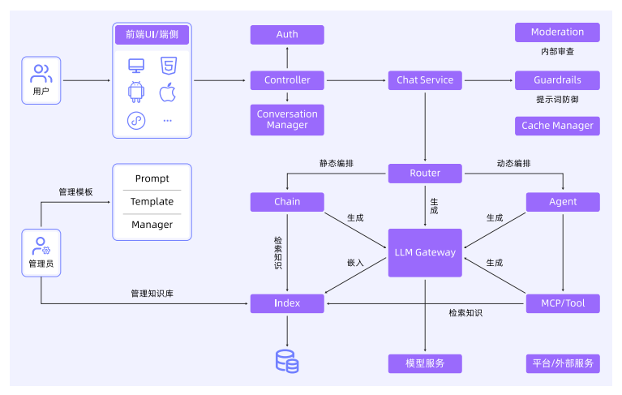
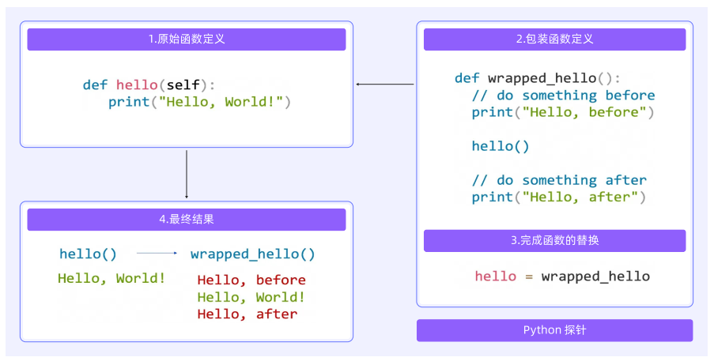
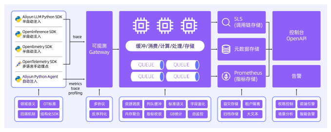
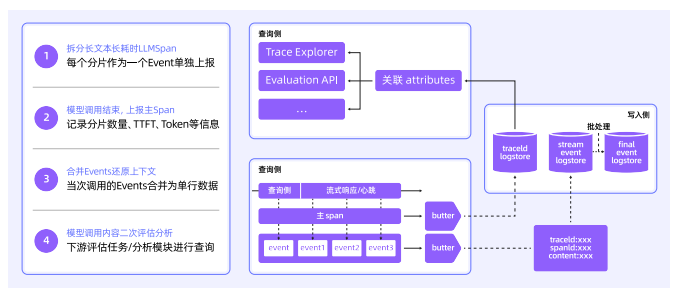
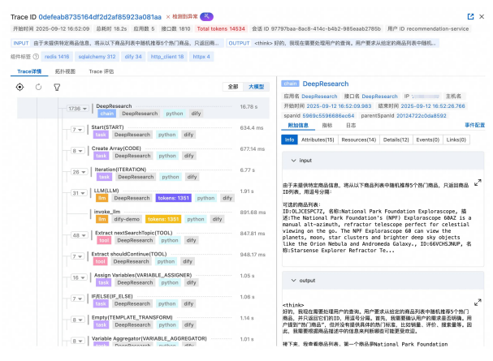
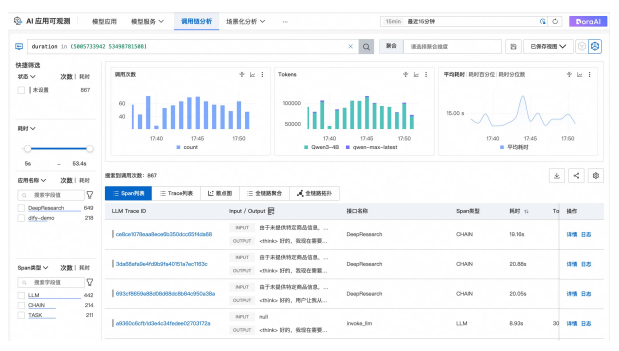
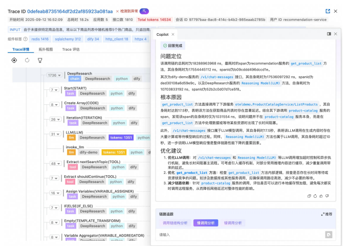
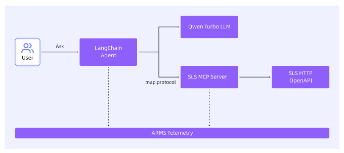

【AI白皮书】AI可观测¶

8.1 AI可观测¶
8.1.1 什么是AI可观测¶
AI应用具有非确定性，即便是相同的提示，在不同次的运行中也可能产生不同的输出。如果没有可观测，在发生幻觉虚假错误等严重问题时根本无从查起。相反，一个好用的可观测工具会记录每一次的提示与响应、追踪使用模式，并标记异常。AI可观测是确保AI应用高效稳定安全运行的基础能力。
8.1.2 可观测 vs 监控：从“是什么”到“为什么”¶
监控关注“什么”：比如API响应时间、错误率、请求吞吐量和Token使用量等指标。
可观测性探究“为什么”：比如一个聊天机器人的回答不正确且耗时过长，监控可能只会显示错误率上升或延迟过高，但可观测能揭示为什么：可能是一次长时间的RAG请求最终得到了错误的召回，导致模型给出不准确的答案。
AI应用的每一次请求，都可以被弯针的追溯，包括调用工具的出入参、发送给大模型的具体提示词、任何中间步骤（如调用数据库或其他API），以及最终收到的输出。可观测工具就可以提供极其丰富的排查数据和上下文，帮助定位问题的根因。
8.1.3 AI可观测应对的核心挑战¶
性能与可靠性问题：大模型是资源密集型的，延迟峰值和瓶颈时有发生。
成本问题：许多大模型服务按Token使用量收费，若无控制，成本可能意外飙升。
质量问题：大模型的可能输出从训练数据中继承偏见或有害内容，也很可能产生幻觉。
8.1.4 AI可观测解决方案的关键能力¶
端到端全链路追踪：提供端到端的日志采集和链路追踪，可视化请求在整个AI应用中的执行路径。
全栈可观测：包含应用、AI网关、推理引擎可观测3个维度。
自动化评估功能：通过引入评估Agent，对应用和模型的输入输出进行自动化的评估，检测幻觉、不一致或答案质量下降等问题。
8.2 端到端全链路追踪¶

一个典型的LLM应用架构可能包含用户终端、认证模块、会话管理、对话服务、大模型路由、流程编排等。需要具备3项可观测能力：标准化的数据语义规范、低成本高质量的数据采集、端到端全链路追踪。
8.2.2 核心技术路径¶
1、链路插桩技术
Python探针，Monkey Patch

Java探针，字节码增强技术。
Go探针，编译时插桩技术。
多语言兼容，其他语言通过OpenTelemetry开源框架支持。
2、链路采集与加工
数据采集策略

流式场景优化

3、LLM Trace查询与分析
全链路透视

高级过滤

智能诊断

8.3 全栈可观测：应用可观测¶
8.3.1 AI原生应用开发的痛点¶
工具选择盲区、错误排除困难、Token消耗黑洞、循环调用陷阱。
8.3.2 AI原生应用可观测需要具备哪些能力¶
零代码接入、可视化工具选择过程、精准故障定位、Token成本分析、端到端链路追踪。
8.3.3 演示场景架构¶
使用LangChain框架构建一个Agent，大模型使用Qwen Turbo。SLS MCP服务器通过SLS HTTP OpenAPI访问日志的接口，完成日志分析请求。LangChain Agent与MCP服务器产生的观测数据会自动采集到可观测平台中。

8.4 全栈可观测：AI网关可观测¶
8.4.1 观测场景：AI组件的多维可观测需求¶
1、性能与稳定性监控：保障AI应用的高可用
关键性能指标：QPS、请求成功率、响应时间、流式与非流式请求分布。
2、资源消耗与成本分析：实现精细化成本管控
Token消耗数/s、按模型维度的Token使用统计、按消费者维度的Token使用统计。
3、安全与合规审计：防范数据泄露与内容风险
内容安全拦截日志、风险类型统计、风险消费者统计。
4、治理策略执行追踪：确保限流、缓存、Fallback有效落地
限流统计、缓存命中情况、Fallback执行路径。
5、多租户与权限治理：实现调用者的精细化管理
消费者身份识别、消费者级指标统计、异常消费者检测。
8.4.2 观测实践：基于AI网关的可观测体系构建¶
1、观测数据：统一日志与指标
2、可视化监控：多维度仪表盘
3、深度分析：基于日志查询与SQL分析
4、智能告警与自动化响应
5、成本优化与治理闭环